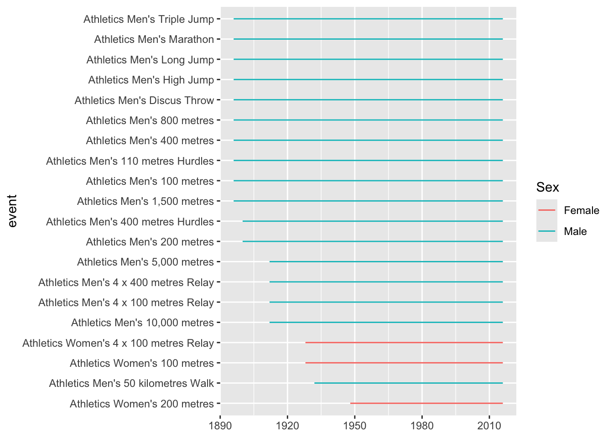
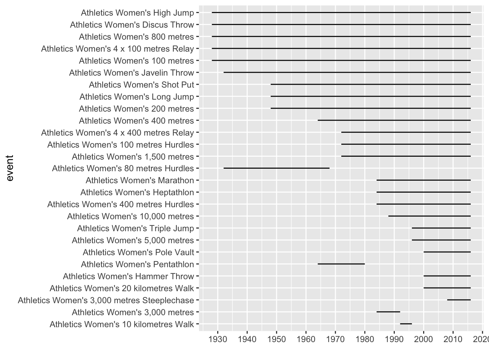

Code
library(tidyverse)
tt_list <- tidytuesdayR::tt_load("2024-08-06")
Downloading file 1 of 1: `olympics.csv`Code
list2env(tt_list, envir = .GlobalEnv)<environment: R_GlobalEnv>Andrew
Brendan
Abram
Kennedy
Imran
Gatz
Jon
August 7, 2024
The most recent Tidy Tuesday contained various types of data on previous Olympics. Andrew led the session, with some additional contributions from Brendan.
Load packages and data
Downloading file 1 of 1: `olympics.csv`<environment: R_GlobalEnv>Take a glimpse:
Rows: 271,116
Columns: 15
$ id <dbl> 1, 2, 3, 4, 5, 5, 5, 5, 5, 5, 6, 6, 6, 6, 6, 6, 6, 6, 7, 7, 7, …
$ name <chr> "A Dijiang", "A Lamusi", "Gunnar Nielsen Aaby", "Edgar Lindenau…
$ sex <chr> "M", "M", "M", "M", "F", "F", "F", "F", "F", "F", "M", "M", "M"…
$ age <dbl> 24, 23, 24, 34, 21, 21, 25, 25, 27, 27, 31, 31, 31, 31, 33, 33,…
$ height <dbl> 180, 170, NA, NA, 185, 185, 185, 185, 185, 185, 188, 188, 188, …
$ weight <dbl> 80, 60, NA, NA, 82, 82, 82, 82, 82, 82, 75, 75, 75, 75, 75, 75,…
$ team <chr> "China", "China", "Denmark", "Denmark/Sweden", "Netherlands", "…
$ noc <chr> "CHN", "CHN", "DEN", "DEN", "NED", "NED", "NED", "NED", "NED", …
$ games <chr> "1992 Summer", "2012 Summer", "1920 Summer", "1900 Summer", "19…
$ year <dbl> 1992, 2012, 1920, 1900, 1988, 1988, 1992, 1992, 1994, 1994, 199…
$ season <chr> "Summer", "Summer", "Summer", "Summer", "Winter", "Winter", "Wi…
$ city <chr> "Barcelona", "London", "Antwerpen", "Paris", "Calgary", "Calgar…
$ sport <chr> "Basketball", "Judo", "Football", "Tug-Of-War", "Speed Skating"…
$ event <chr> "Basketball Men's Basketball", "Judo Men's Extra-Lightweight", …
$ medal <chr> NA, NA, NA, "Gold", NA, NA, NA, NA, NA, NA, NA, NA, NA, NA, NA,…How many sports of which kinds?
# A tibble: 66 × 2
sport n
<chr> <int>
1 Athletics 38624
2 Gymnastics 26707
3 Swimming 23195
4 Shooting 11448
5 Cycling 10859
6 Fencing 10735
7 Rowing 10595
8 Cross Country Skiing 9133
9 Alpine Skiing 8829
10 Wrestling 7154
# ℹ 56 more rowsEvents within the sport of athletics
# A tibble: 83 × 2
event n
<chr> <int>
1 Athletics Men's Marathon 2093
2 Athletics Men's 100 metres 1936
3 Athletics Men's 4 x 100 metres Relay 1910
4 Athletics Men's 4 x 400 metres Relay 1749
5 Athletics Men's 200 metres 1495
6 Athletics Men's 400 metres 1417
7 Athletics Men's 800 metres 1321
8 Athletics Women's 4 x 100 metres Relay 1174
9 Athletics Men's 1,500 metres 1162
10 Athletics Women's 100 metres 1063
# ℹ 73 more rowsA visualisation: we wanted to show how long different sports have been running:
plot_obj <-
olympics %>%
filter(sport == "Athletics") %>%
group_by(event) %>%
summarise(Earliest_year = min(year),
Latest_year = max(year),
n = n()) %>%
arrange(desc(n)) %>%
mutate(year_range = Latest_year - Earliest_year+1,
event = fct_reorder(event, year_range)) %>%
mutate(Sex = case_when(str_detect(str_to_lower(event), "women") ~ "Female",
str_detect(str_to_lower(event), "men") ~ "Male",
.default = "Other")) %>%
mutate(event_status = if_else(Latest_year == 2016, "Live", "Dead"))
plot_obj %>%
slice(1:20) %>%
ggplot(aes(y=event, color = Sex))+
geom_errorbarh(aes(xmin=Earliest_year, xmax=Latest_year, height=0))
What about just Female events?

Slight modification to indicate whether events are still running:
# A tibble: 612 × 2
# Groups: event, sex [612]
sex event
<chr> <chr>
1 M Weightlifting Men's Super-Heavyweight
2 M Swimming Men's 100 metres Freestyle
3 F Weightlifting Women's Super-Heavyweight
4 M Bobsleigh Men's Two
5 M Weightlifting Men's Heavyweight
6 M Judo Men's Heavyweight
7 M Wrestling Men's Super-Heavyweight, Greco-Roman
8 F Judo Women's Heavyweight
9 M Wrestling Men's Super-Heavyweight, Freestyle
10 M Athletics Men's Shot Put
# ℹ 602 more rowsHave shotputters got heavier or lighter over time?